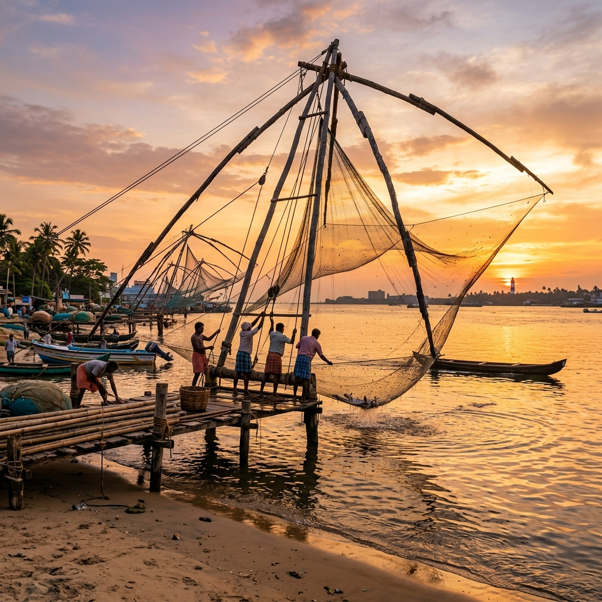
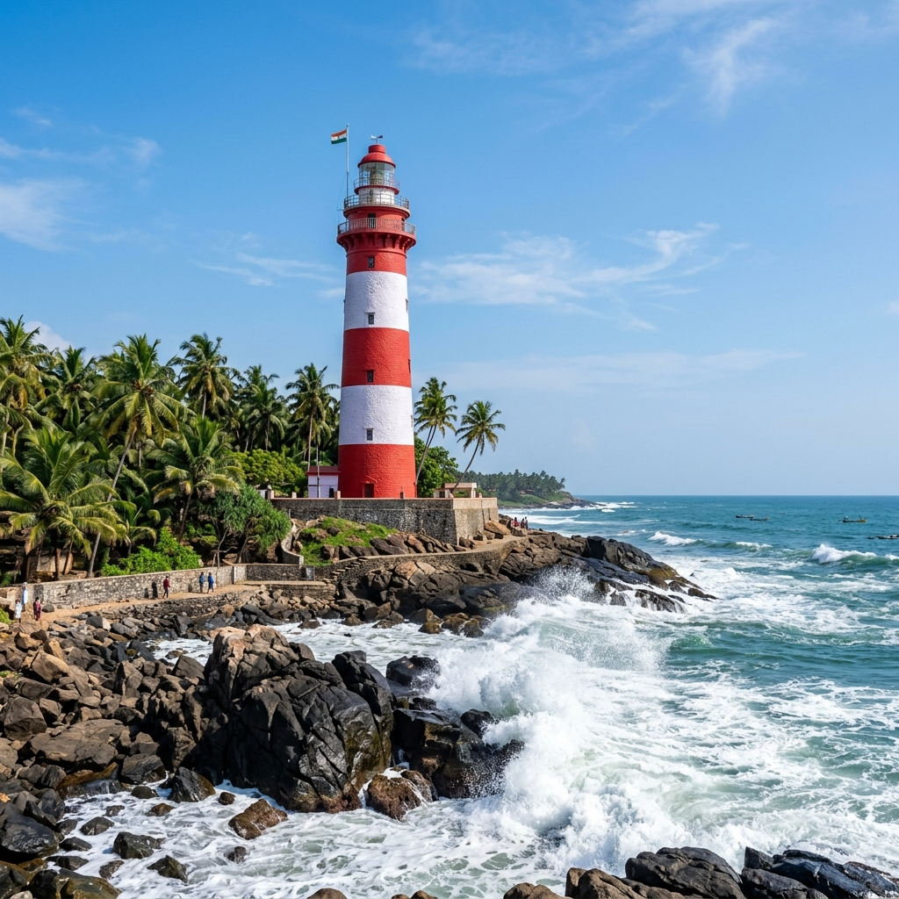
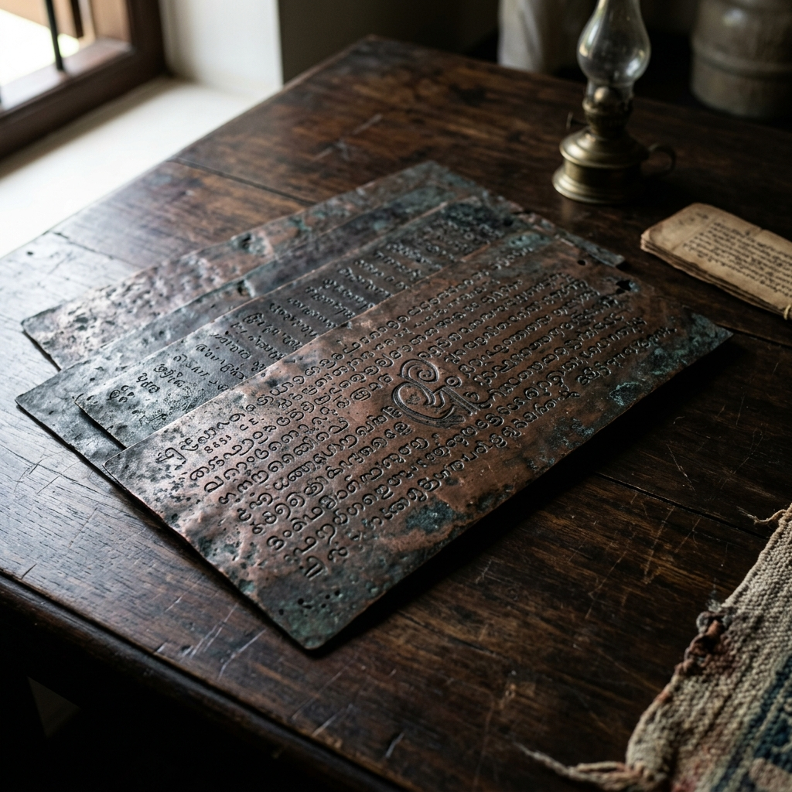

Kollam Ancient Port Explorer
Discover Quilon, the legendary merchant capital of the Venad kingdom. Follow the scent of black pepper that brought Roman galleons, Chinese treasure ships, and Syrian Christian traders to Kerala's emerald shores.
The Gateway to the Southern Malabar
Kollam, traditionally known as Quilon, stands as one of the oldest ports on the Malabar Coast. Bordered by the Ashtamudi Lake and the Arabian Sea, it became the prosperous commercial capital of the Venad kingdom (later Travancore), serving as a crucial terminal for maritime trade routes across the Indian Ocean.
The city's historical importance is so deep that its reconstruction in 825 CE marked the starting point of the Malayalam solar calendar, known as the Kollavarsham. Medieval accounts describe Kollam as a majestic, multi-cultural city where merchants of various faiths coexisted under the patronage of the local rulers.
📜 Port Profile
- Location: Ashtamudi Estuary, Kerala coast.
- Malayalam Era: City reconstruction in 825 CE established the Malayalam Calendar.
- Ancient Geography: Mentioned in Roman, Byzantine, and Arab records as Coilum.
Foreign Trade Connections of Quilon
Kollam was a global crossroads, hosting merchants and emissaries from all major medieval empires.
Chinese Imperial Ties
During the Tang and Yuan Dynasties, Chinese junk fleets sailed to Quilon. Kublai Khan sent diplomatic embassies to the port, leaving a legacy of Chinese coins and celadon pottery.
Syrian Merchant Guilds
The 849 CE Tarisapalli Copper Plates document trade privileges granted to Syrian Christian guilds (Manigramam and Anchuvannam), establishing church properties and merchant protection.
Arabian Dhows
Persian Gulf and Red Sea traders docked here to buy Malabar ginger, cardamom, and coconuts, establishing active shipping connections with Aden and Hormuz.
🍂 Principal Exports & Items
- Malabar Black Pepper: Celebrated worldwide as "Black Gold."
- Chinese Celadon: Imported porcelain exchanged for local timber.
- Coir & Teak Wood: High-durability shipbuilding materials.
- Spices: Cardamom, ginger, and cinnamon bark.
Pepper Yards & Ship Timber
Kollam's main commodity was Malabar black pepper, prized across Europe and Asia for culinary and preservative qualities. The Venad kings controlled pepper production and warehousing, ensuring high standard checks before cargo shipping.
The local forests also provided high-quality teak wood, essential for building dhows and cargo ships. In exchange, Kollam imported silk, fine porcelain, and copper bullion from China, alongside incense and glasswares from Arab and Mediterranean merchant networks.
Chronology of Kollam Port
Key dates tracking Kollam's history from regional port to global trade powerhouse.
Malayalam Calendar Foundation
Reconstruction of Kollam city leads to the inception of the Kollavarsham solar calendar era.
Tarisapalli Copper Plates
The Venad ruler grants royal trade charters and land grants to Nestorian Christian merchant guilds.
Marco Polo's Visit
Venetian explorer Marco Polo visits Coilum, documenting extensive pepper, ginger, and dye-wood trade.
European Fortifications
Portuguese under Cabral establish a trading factory and later build Fort St. Thomas on Thangassery beach.
Heritage and Coastlines of Quilon
Explore the marine structures and relics that mark Kollam's trade history.



📚 References & Further Reading
- Marco Polo (1298). The Travels of Marco Polo. Book 3, Chapter 22: Of the Kingdom of Coilum.
- Logan, William (1887). Malabar Manual. Government Press.
- Menon, A. Sreedhara (1967). A Survey of Kerala History. Sahitya Pravarthaka Co-operative Society.
- Archaeological Survey of India (N.D.). Excavations at Thangassery: Chinese Porcelain and Coin Cache Reports.